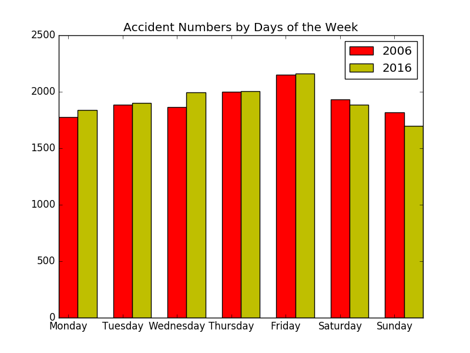
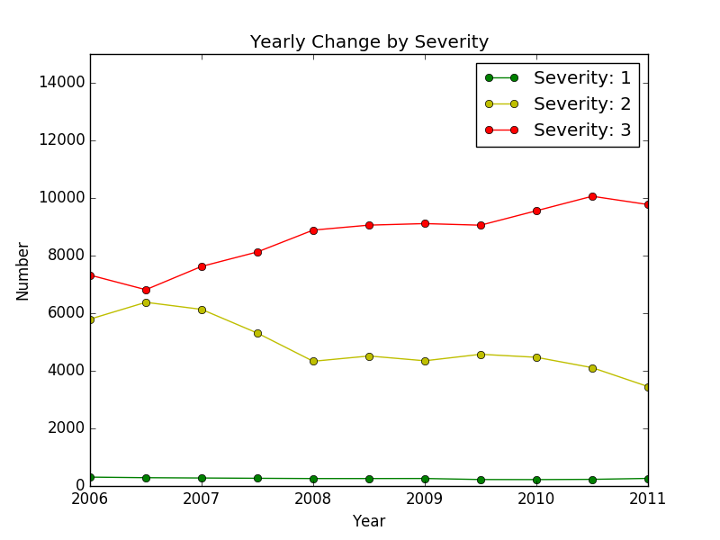

1. The average number of accidents per year is 13788.00.
2. The second most common type of accident in all the recorded years is Collision with a fixed object, and the percentage of the accidents that belong to this type is 16.56%.
| 'Vehicle Type' | 2006 | 2007 | 2008 | 2009 | 2010 | 2011 | 2012 | 2013 | 2014 | 2015 | 2016 |
| Car | 9535 | 9363 | 9757 | 9379 | 9252 | 9482 | 9284 | 9473 | 10004 | 9359 | 8810 |
| Station Wagon | 2857 | 2916 | 3054 | 3045 | 3241 | 3319 | 3398 | 2819 | 2492 | 3987 | 3965 |
| Motor Cycle | 1772 | 1900 | 2030 | 1918 | 1713 | 1768 | 1776 | 1931 | 2042 | 2037 | 1858 |
| Utility | 1422 | 1453 | 1491 | 1592 | 1697 | 1707 | 1795 | 1718 | 1685 | 2045 | 1923 |
| Bicycle | 1215 | 1274 | 1338 | 1445 | 1452 | 1528 | 1397 | 1534 | 1586 | 1527 | 1293 |
| Panel Van | 607 | 526 | 515 | 521 | 498 | 488 | 572 | 527 | 555 | 531 | 531 |
| Prime Mover (No of Trailers Unknown) | 322 | 273 | 4 | 3 | 7 | 0 | 0 | 0 | 0 | 0 | 0 |
| Taxi | 303 | 350 | 370 | 343 | 312 | 314 | 281 | 294 | 312 | 246 | 203 |
| Heavy Vehicle (Rigid) > 4.5 Tonnes | 259 | 375 | 387 | 293 | 290 | 341 | 288 | 303 | 264 | 343 | 271 |
| Unknown | 199 | 180 | 184 | 156 | 167 | 249 | 445 | 527 | 543 | 601 | 437 |
| Light Commercial Vehicle (Rigid) <= 4.5 Tonnes GVM | 199 | 244 | 251 | 222 | 260 | 265 | 210 | 199 | 170 | 182 | 202 |
| Bus/Coach | 106 | 133 | 125 | 152 | 123 | 164 | 132 | 137 | 127 | 136 | 98 |
| Rigid Truck(Weight Unknown) | 92 | 32 | 20 | 20 | 12 | 0 | 0 | 0 | 0 | 0 | 0 |
| Other Vehicle | 72 | 85 | 79 | 70 | 53 | 59 | 61 | 71 | 56 | 21 | 46 |
| Motor Scooter | 54 | 118 | 143 | 136 | 145 | 131 | 112 | 126 | 111 | 109 | 104 |
| Tram | 52 | 72 | 82 | 75 | 78 | 67 | 53 | 54 | 40 | 69 | 37 |
| Mini Bus(9-13 seats) | 23 | 16 | 29 | 27 | 15 | 21 | 26 | 13 | 12 | 23 | 13 |
| Train | 15 | 5 | 9 | 5 | 3 | 6 | 12 | 6 | 5 | 3 | 5 |
| Moped | 12 | 18 | 16 | 14 | 14 | 19 | 15 | 16 | 20 | 16 | 25 |
| Prime Mover Only | 10 | 11 | 21 | 25 | 32 | 43 | 40 | 51 | 46 | 38 | 54 |
| Prime Mover - Single Trailer | 2 | 1 | 233 | 205 | 211 | 210 | 226 | 190 | 211 | 211 | 166 |
| Not Applicable | 2 | 2 | 1 | 2 | 5 | 0 | 2 | 1 | 0 | 0 | 0 |
| Horse (ridden or drawn) | 1 | 1 | 1 | 1 | 1 | 6 | 2 | 0 | 1 | 0 | 0 |
| Parked trailers | 0 | 0 | 0 | 0 | 0 | 0 | 1 | 6 | 15 | 9 | 3 |
| Quad Bike | 0 | 0 | 0 | 0 | 0 | 2 | 7 | 9 | 21 | 9 | 14 |
| Prime Mover B-Triple | 0 | 0 | 2 | 0 | 2 | 1 | 1 | 1 | 1 | 1 | 1 |
| Plant machinery and Agricultural equipment | 0 | 0 | 0 | 0 | 0 | 1 | 10 | 14 | 23 | 23 | 14 |
| Prime Mover B-Double | 0 | 1 | 73 | 76 | 91 | 95 | 97 | 92 | 63 | 91 | 72 |
| LGA | No. 2006 | No. 2016 | Difference | Change |
| MELBOURNE | 788 | 700 | -88 | -11.17% |
| CASEY | 501 | 592 | 91 | 18.16% |
| DANDENONG | 478 | 516 | 38 | 7.95% |
| GEELONG | 462 | 494 | 32 | 6.93% |
| YARRA RANGES | 428 | 394 | -34 | -7.94% |
| MONASH | 418 | 373 | -45 | -10.77% |
| KINGSTON | 384 | 306 | -78 | -20.31% |
| MORELAND | 368 | 382 | 14 | 3.80% |
| BOROONDARA | 346 | 279 | -67 | -19.36% |
| MORNINGTON PENINSULA | 337 | 277 | -60 | -17.80% |
5. 
6. 